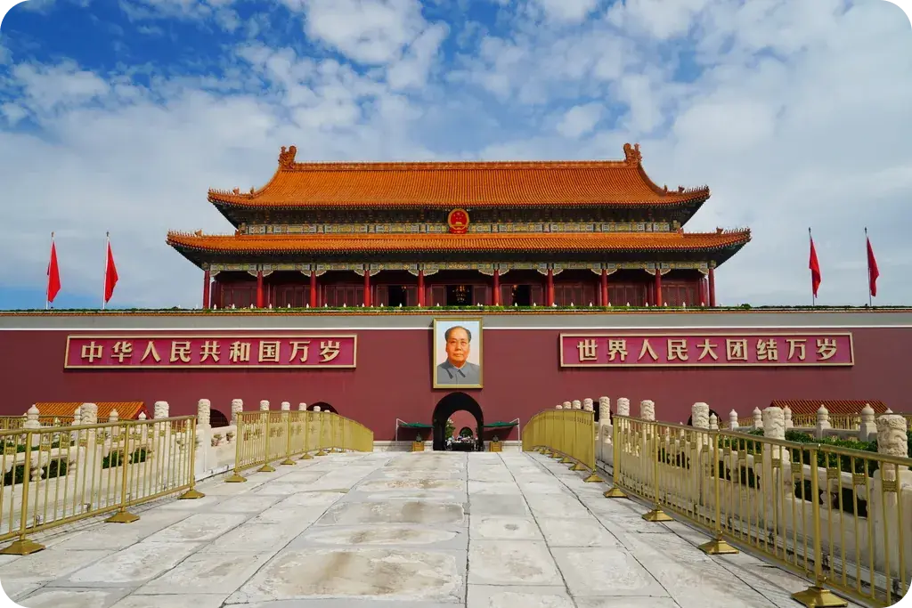
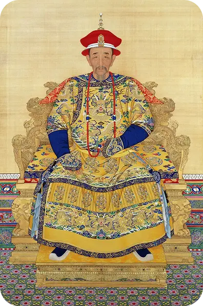
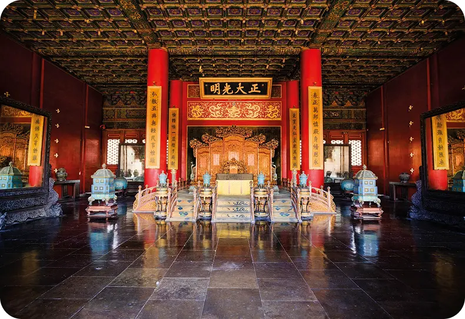

La ciudad prohibida
Desde su construcción a principios del siglo XV, ha sido el escenario de la vida de emperadores, concubinas, eunucos y funcionarios que conformaban la corte imperial de las dinastías Ming y Qing. Hoy, la Ciudad Prohibida sigue siendo un símbolo de la grandiosidad de la civilización china y un sitio Patrimonio de la Humanidad que atrae a millones de visitantes.
Comenzó a construirse en 1406, durante el reinado del emperador Yongle, el tercer gobernante de la dinastía Ming. Yongle había trasladado la capital de China desde Nankín a Pekín, y con ello, decidió erigir un palacio digno de la grandeza imperial. Se necesitaron más de un millón de trabajadores y catorce años para completar la edificación de este vasto complejo, que cubre un área de 720,000 metros cuadrados, lo equivalente a más de 100 campos de fútbol.
Paleta de colores
- Rojo intenso en paredes y columnas, simboliza poder y prosperidad.
- Amarillo/dorado en tejas imperiales, exclusivas del emperador, asociado con el poder imperial, riqueza, prestigio y espiritualidad.
- Verde representando vida, fertilidad, crecimiento y azul representando representa inmortalidad, eternidad y conexión con lo divino, estos 2 colores usados en detalles decorativos.
Símbolos representativos
Simboliza el poder imperial, orden cósmico y la centralidad del emperador como "Hijo del Cielo", Fue hogar de 24 emperadores a lo largo de la historia y funciono como centro del poder del país durante más de 500 años además demuestra el potencial arquitectónico de la china antigua al ser uno de los palacios mejor conservados.
Fue concebida como el centro del universo, su diseño simétrico representaba la armonía entre el cielo y la tierra, la función que desempeñaba el emperador era de mediador entre las fuerzas divinas y el mundo terrenal
Preferencias de diseño y estética visual
Estética basada en la simetría, el orden geométrico y la jerarquía, con techos curvos, patrones decorativos y jardines internos; refleja la filosofía del equilibrio cósmico.
